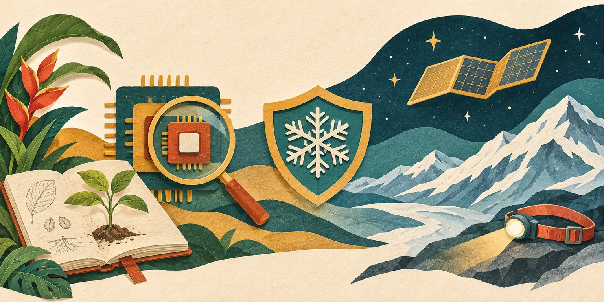

Independent daily digestFive stories worth your time
The Daily Curiosity
The systems behind discovery deserve a closer look. Today: conservation in the field, the evidence behind faster AI research, the security of cold storage, a finished orbital power upgrade, and a mountain season that refuses easy labels.

AI-generated editorial illustration · The Daily Curiosity. Symbolic artwork, not documentary imagery or a technical diagram.
STORY 01 · Higher education · SUNY
A Puerto Rico field placement turns climate study into practice
SUNY announced November 5 that nine students from seven campuses will participate in its third internship exchange with the University of Puerto Rico and conservation organization Para La Naturaleza in summer 2027. The partnership gives students hands-on research experience in conservation and sustainability, connecting classroom study with work in Puerto Rico’s ecosystems. The small cohort illustrates a concrete route into environmental work: an immersive placement with local research and conservation partners, rather than a new degree program.
Source published 2026-11-05 · Briefing date 2026-11-06
AI may be speeding up its own development—but the evidence is partly hidden
In a November 5 assessment, METR estimates that Anthropic is improving model capabilities on well-specified tasks at roughly twice its earlier pace, with substantial uncertainty around that estimate. METR attributes much of the acceleration to AI-assisted research and development, while acknowledging other contributors and possible bottlenecks it has missed. Anthropic redacted much of the evidence METR found most informative, limiting outsiders’ ability to independently assess the conclusions. The report makes research acceleration a question of both capability and accountability; it does not establish a universal productivity multiplier or prove that autonomous self-improvement has taken over.
Source published 2026-11-05 · Briefing date 2026-11-06
STORY 03 · Cybersecurity · Critical infrastructure
The cold chain has become a cybersecurity front line
A November 5 joint federal advisory warns that malicious actors are targeting industrial refrigeration and cold-chain monitoring systems, turning connected temperature controls into a risk for food and medicine. The FBI says exposed, unpatched controllers and default passwords are entry points; it urges operators to remove public internet exposure, protect necessary remote access and ensure temperature alerts reach responsible staff. The agency describes an attempted disruption at three French blood-service sites where staff responded and no blood was lost. The lesson extends beyond ordinary office IT: equipment inventories and incident plans need to include the controllers that keep physical supplies usable.
Source published 2026-11-05 · Briefing date 2026-11-06
The station’s final new solar array is now unfurled
NASA confirms that Anil Menon and Canadian astronaut Joshua Kutryk installed and deployed the eighth and final roll-out solar array on the International Space Station during a November 5 spacewalk. The completed series raises the station’s power-generation capacity from 160 kilowatts to approximately 215 kilowatts, following 18 spacewalks to prepare equipment and install the arrays. This is the completed power upgrade, a significant follow-up to the October 29 installation covered here, and a reminder that keeping an orbital laboratory productive requires years of infrastructure work.
Source published 2026-11-05 · Briefing date 2026-11-06
Thin ice makes the Adirondacks’ in-between season especially tricky
DEC’s November 5 Adirondack bulletin renews its warning against attempting Mount Colden’s Trap Dike while thin ice makes the route hazardous without providing dependable winter climbing conditions. The bulletin pairs that warning with a recent rescue account and earlier sunsets after the clock change, emphasizing how quickly an outing can become a nighttime emergency. The practical distinction matters: the Trap Dike is a technical climb, and DEC directs hikers seeking Colden’s summit to hiking routes instead. This is a dated conditions warning, not a permanent trail closure; checking the latest backcountry notices remains part of planning.
Source published 2026-11-05 · Briefing date 2026-11-06